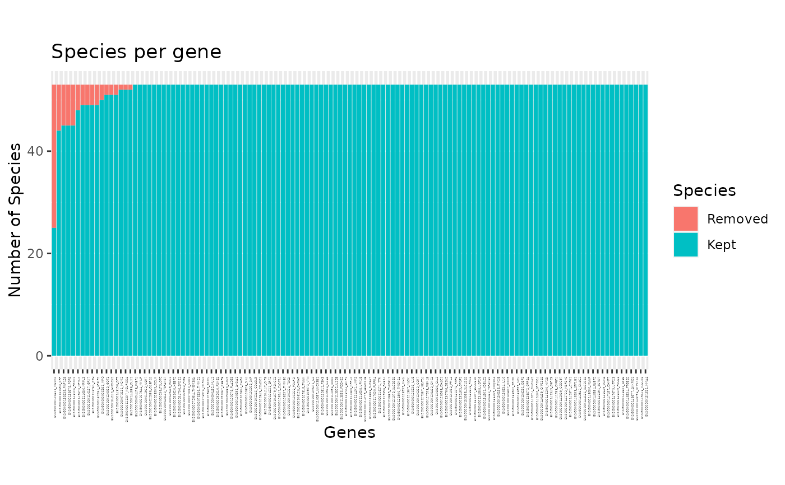
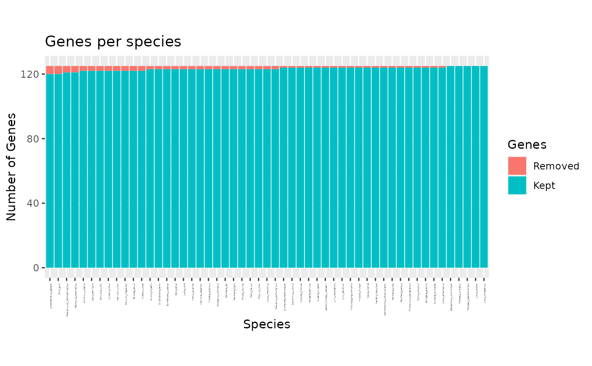
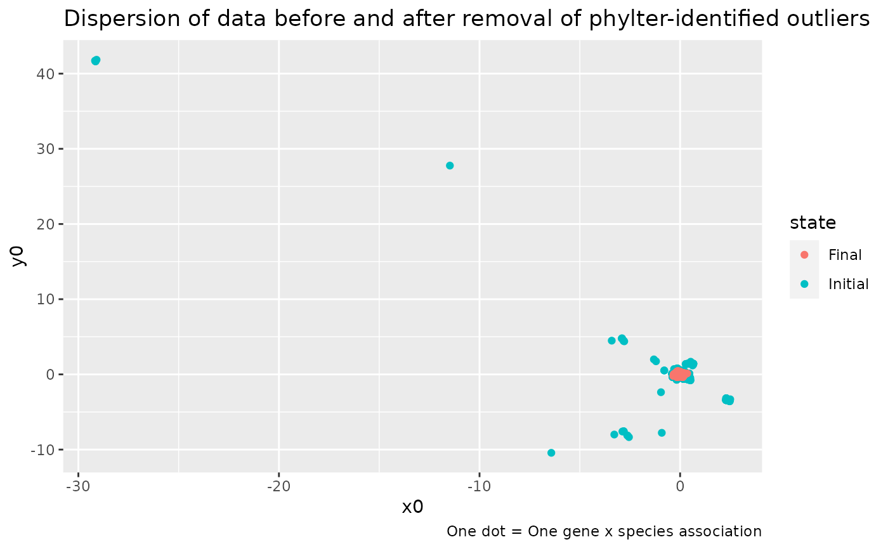

These functions take objects of class phylter as input and display various plots summarizing the results obtained (see details).
Usage
# S3 method for phylter
plot(x, what = "all", layout = 1, sorted = TRUE, ...)
plot2WR(
x,
show.missing = TRUE,
show.outliers = TRUE,
transpose = FALSE,
clust = FALSE
)
plotDispersion(x)
plotRV(x, what = "Initial", labelnames = TRUE, clust = FALSE)
plotopti(x)Arguments
- x
The object returned by the 'phylter()' function.
- what
Specifies what to plot. If "species", a barplot will show how many genes each species is in, and what proportion of thoses were detected as outliers. If "genes", a barplot shows how many species contains each gene and how many of them has been detected as outliers. If "all" (the defaut), the two plots described above are displayed one after the other, prompting the user to press ENTER to display the next one.
- layout
What layout to use. Do not change if you don't know what it is.
- sorted
Logical. Should bars be sorted by the number of outliers detected. Default to TRUE
- ...
Additional arguments to be passed to plot and print functions.
- show.missing
Logical. Should missing data be represented on the heatmap. If TRUE (the default), white dots show were these missing entries are in both the initial and final 2WR matrices.
- show.outliers
Logical. Should outliers be represented on the heatmap. If TRUE (the default), yellow dots indicate outliers on the final 2WR matrix.
- transpose
Logical. If TRUE, the two matrices are piled up instaed of being displayed side by side. Default to FALSE.
- clust
Logical. Should the rows or/and columns of the matrices that are plotted be reorderd prior to plotting. Reordering is based on a hierarchical clustering. Default to FALSE. This is conveninent when the names of the genes are very long for instance.
- labelnames
Logical. If TRUE, the names of labels are indicated on the heatmap. If FALSE they are removed. This is conveninent when the names of the genes are very long for instance.
Value
The desired plots are returned. Note that you might want to call the pdf(),
png(), jpeg(), or tiff() function first if you want to save the plot(s) to an
external file. You can also use the function write.phylter(pdfreport=TRUE) to write
all possible plots in a single pdf file.
Details
plot(x)andplot.phylter(x)plot the genes found in each species or species found in each gene as barplots, highlighting the outliers detected.plot2WR(x)plots side by side the initial and the final gene x species (unreable for large datasets) matrices (the 2WR matrices), highlighting missing data and detected outliers.plotDispersion(x)plots dispersion of data before and after phylter, on a 2D space. Each dot represents a gene-species association.plotRV(x)plots the RV coefficient matrix that descibes all agains all correlations between gene matricesplotopti(x)plots the compromise matrix score at each step of the optimization.
Examples
data(carnivora)
# perform phylter analysis
res <- phylter(carnivora, parallel = FALSE)
#>
#> Number of Genes: 125
#> Number of Species: 53
#> --------
#> Initial score: 0.86235
#> 28 new cells to remove -> New score: 0.90272 -> OK
#> 18 new cells to remove -> New score: 0.90833 -> OK
#> 16 new cells to remove -> New score: 0.91501 -> OK
#> 18 new cells to remove -> New score: 0.92561 -> OK
#> 5 new cells to remove -> New score: 0.93404 -> OK
#> 4 new cells to remove -> New score: 0.93692 -> OK
#> 2 new cells to remove -> New score: 0.93712 -> OK
#> 1 new cells to remove -> New score: 0.94392 -> OK
#> 1 new cells to remove -> New score: 0.94417 -> OK
#> 1 new cells to remove -> New score: 0.94426 -> OK
#> => No more outliers detected -> Checking for complete gene outliers
#> => No more outliers detected -> STOPPING OPTIMIZATION
#> --------
#>
#> Total number of outliers detected: 94
#> Number of complete gene outliers : 0
#> Number of complete species outliers : 0
#>
#> Gain (concordance between matrices): 8.19%
#> Loss (data filtering): 1.42%
# plot for each gene the number of outlier species
plot(res, "genes")

# \donttest{
# plot for each species the number genes where it is outlier
plot(res, "species")

# plot the dispersion of data before and after the use of phylter
plotDispersion(res)

# }